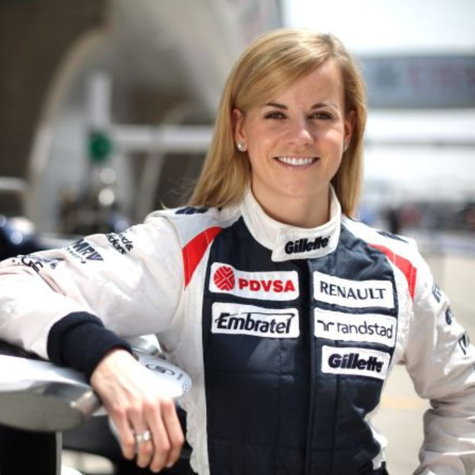
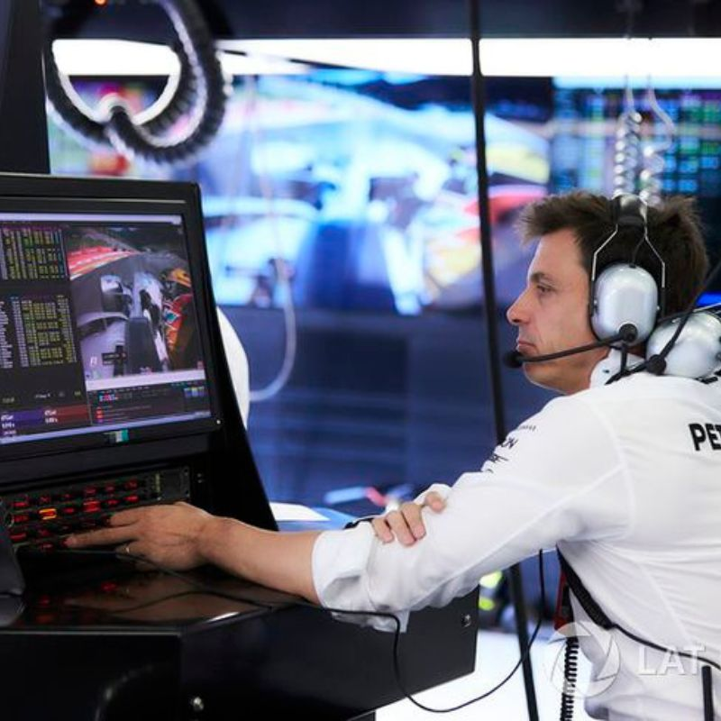

La F1 cuenta con 20 pilotos que viajan a cada circuito. Ellos son los conductores principales de los coches durante las carreras, pero su trabajo va mucho más allá de solo conducir rápido. El trabajo más obvio es manejar el coche en las carreras, acelerando a más de 300 km/h y adelantando a otros pilotos. Pero también trabajan con sus equipos en el planning estratégico durante las carreras, cómo cuándo cambiar neumáticos, cuándo arriesgarse a adelantar y cómo ahorrar combustible. Y es que los pilotos están en contacto con su ingeniero de pista (que explicaremos más tarde) y otros miembros del equipo durante la carrera, reportando sobre cómo se siente el coche (por ejemplo, si hay problemas con los frenos o si el coche está demasiado rápido o lento) y recibiendo instrucciones. Ser piloto no sólo consiste en pensar por tí mismo y conseguir el mayor número de victorias. A veces, hay que tener en mente el trabajo en equipo. Un equipo consta de dos pilotos, que pueden ayudar a su compañero con estrategia o asegurar que el equipo gane el campeonato de constructores.
También existen los pilotos de reserva, test y simuladores que tienen roles importantes en un equipo de F1, pero su trabajo es algo diferente al de los pilotos titulares. Los pilotos reserva están disponibles para reemplazar a un piloto titular en caso de que no pueda correr por lesión, enfermedad u otra razón. Aunque no corren en todas las carreras, deben estar listos para subirse al coche, entrenando de forma regular y estando familiarizados con los detalles del coche y el equipo. A veces participan en los viernes de prácticas (cuando los pilotos titulares no están en pista) para ayudar a los ingenieros con ajustes y obtener más datos. Los pilotos de test se encargan de probar nuevos componentes y mejoras del coche, como cambios en el motor, aerodinámica, o neumáticos. Prueban la fiabilidad de las piezas nuevas en condiciones reales de carrera, bien durante entrenamientos libres, pruebas de pretemporada o incluso en sesiones especiales organizadas por el equipo. Y, por último, los equipos también cuentan con pilotos de simuladores. Su función principal es probar y ajustar el coche en entornos virtuales que reproducen las condiciones de una carrera real. En estos, los pilotos pueden hacer pruebas en un circuito sin estar realmente en el coche. Así los ingenieros pueden probar diferentes configuraciones del coche.
Y como conector entre equipo y piloto, necesitamos la existencia de ingenieros de pista. Y es que la relación entre pilotos e ingenieros de pista es fundamental en F1. Los pilotos brindan feedback sobre el rendimiento del coche, y los ingenieros son los encargados de realizar ajustes técnicos basados en esa información. Durante la carrera, ambos se mantienen en constante comunicación para poder ajustar estrategias y tomar las decisiones que crean convenientes (por ejemplo, el momento adecuado para hacer paradas en boxes). La confianza y la colaboración entre ambos son esenciales para maximizar el rendimiento y la competitividad del equipo. Aunque muchos se acaben gritando por radio.